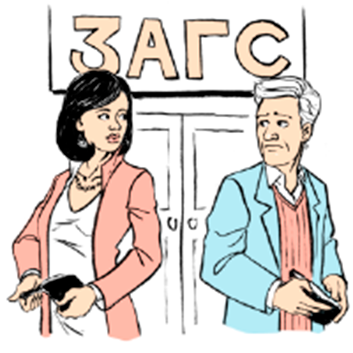

Расторжение брака возможно через РАГС (органы регистрации актов гражданского состояния, ранее - ЗАГС) или через суд.
Процес расторжения брака через РАГС не сложнее чем его регистрация!
Однако законом установлен ряд ограничений для расторжения брака через РАГС.
Расторжение брака через РАГС не возможно если:
- Есть совместные несовершеннолетние дети;
- Второй супруг против или не желает явиться в РАГС
При наличии совместных детей от 1 до 18 лет или
отказе второго супруга пойти в РАГС расторжение брака
производится исключительно через суд.
Этот процесс немного сложнее, его мы и разберем!
Внимание! Расторгнуть брак до достижения совместным ребенком 1-го года или во время беременности практически невозможно.